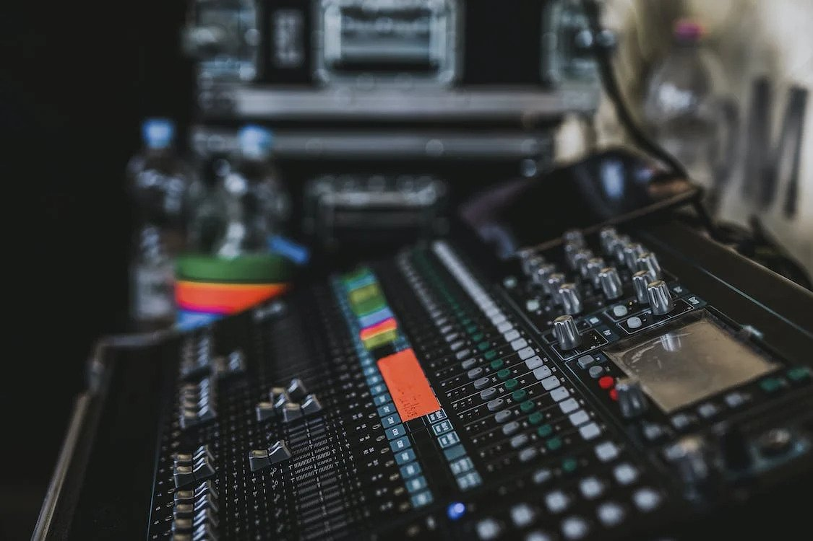

Digital Audio Workstations (DAWs)
Digital Audio Workstations, commonly referred to as DAWs, have become an integral part of music production in the digital age. A DAW is a software application that is used for recording, editing, mixing, and mastering music on a computer. This project aims to provide an overview of DAWs, including their history, features, and how they are used in music production.
Introduction:
The project will start with an introduction to DAWs, explaining their importance in modern music production and how they have replaced traditional recording equipment.
Features:
The project will delve into the features of DAWs, including the ability to record and edit audio and MIDI tracks, apply digital signal processing (DSP) effects, mix and master music, and create custom plugins. The advantages of working with DAWs, such as the ability to work in a non-linear fashion and the vast array of virtual instruments and plugins available, will also be discussed.
Workflow:
The workflow of DAWs in music production will be explored, including the typical steps involved in creating a song or composition using a DAW. The process of recording, editing, and mixing tracks, as well as how to use virtual instruments and plugins to create unique sounds, will be explained.
Popular DAWs:
The project will provide an overview of some of the most popular DAWs, such as Logic Pro X, Ableton Live, Pro Tools, and FL Studio. The features, strengths, and weaknesses of each DAW will be compared, providing the reader with an understanding of which DAW might be best suited for their needs.